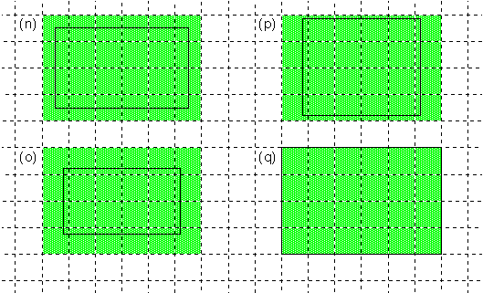
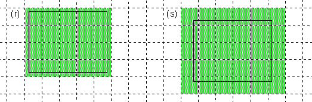

| The Interface Kit Table of Contents | The Interface Kit Index |
To locate screens, windows, and views, draw in them, and report where the cursor is positioned, it's necessary to have some conventional way of talking about the display surface. The same conventions are used whether the display device is a monitor that shows images on a screen or a printer that puts them on a page.
In Be software, the display surface is described by a two-dimensional coordinate system where y-coordinate values are greater towards the bottom of the display and smaller towards the top, x-coordinate values are greater to the right and smaller to the left:
All quantities and distances are measured by floating-point values of the type float.
A single coordinate unit is 1/72 of an inch, roughly equal to a typographical point. However, all screens are considered to have a resolution of 72 pixels per inch (regardless of the actual dimension), so coordinate units actually count screen pixels. In other words, one unit is the distance between the centers of adjacent pixels on-screen.
Specific coordinate systems are associated with the screen, with windows, and with the views inside windows. They differ only in where the two axes are located:
The Interface Kit defines a handful of basic classes for locating points and areas within a coordinate system:
The sides of the rectangle are therefore parallel to the coordinate axes. The left and right sides delimit the range of x-coordinate values within the rectangle, and the top and bottom sides delimit the range of y-coordinate values. For example, if a rectangle's left top corner is at (0.8, 2.7) and its right bottom corner is at (11.3, 49.5), all points having x-coordinates ranging from 0.8 through 11.3 and ycoordinates from 2.7 through 49.5 lie inside the rectangle.
If the top of a rectangle is the same as its bottom, or its left the same as its right, the rectangle defines a straight line. If the top and bottom are the same and also the left and right, it collapses to a single point. Such rectangles are still valid—they specify real locations within a coordinate system. However, if the top is greater than the bottom or the left greater than the right, the rectangle is invalid; it has no meaning.
The device-independent coordinate space described above must be mapped to the pixel grid of a particular display device—the screen, a printer, or some other piece of hardware that's capable of rendering an image. For example, to display a rectangle, it's necessary to find the pixel columns that correspond to its right and left sides and the pixel rows that correspond to its top and bottom.
This depends entirely on the resolution of the device. In essence, each device-independent coordinate value must be translated internally to a device-dependent value—an integer index to a particular column or row of pixels. In the coordinate space of the device, one unit equals one pixel.
This translation is easy for the screen, since, as mentioned above, there's a one-to-one correspondence between coordinate units and pixels. It reduces to rounding floating-point coordinates to integers. For other devices, however, the translation means first scaling the coordinate value to a device-specific value, then rounding. For example, the point (12.3, 40.8) would translate to (12, 41) on the screen, but to (51, 170) on a 300 dpi printer.
To map coordinate locations to device-specific pixels, you need to know only two things:
The axes are located in the same place for all devices: The x-axis runs left to right along the middle of a row of pixels, and the y-axis runs down the middle of a pixel column. They meet at the very center of a pixel.
Because coordinate units match pixels on the screen, this means that all integral coordinate values (those without a fractional part) fall midway across a screen pixel. The following illustration shows where various x-coordinate values fall on the x-axis. The broken lines represent the division of the screen into a pixel grid:
As this illustration shows, it's possible to have coordinate values that lie on the boundary between two pixels. The next section describes how these values are mapped to one pixel or the other.
This section discusses how the various BView Stroke...() and Fill...() functions pick specific pixels to color. (Since pixels are small, this is not a topic that you necessarily need to be concerned about, especially as you begin programming for the BeOS.)
Pixels are chosen after the pen size and all coordinate values have been translated to device-specific units. Device-specific values measure distances by counting pixels; 1 unit equals 1 pixel on the device.
A device-specific value can be derived from a coordinate value using a formula that takes the size of a coordinate unit and the resolution of the device into account. For example:
device_value = coordinate_value * ( dpi / 72 )
dpi is the resolution of the device in dots (pixels) per inch, 72 is the number of coordinate units in an inch, and device_value is rounded to the closest integer.
To describe where lines and shapes fall on the pixel grid, this section mostly talks about pixel units rather than coordinate units. The accompanying illustrations magnify the grid so that pixel boundaries are clear. As a consequence, they can show only very short lines and small shapes. By blowing up the image, they exaggerate the phenomena they illustrate.
The thinnest possible line is drawn when the pen size translates to 1 pixel on the device. Setting the size to 0.0 coordinate units guarantees a 1-pixel pen on all devices.
A 1-pixel pen follows the path of the line it strokes and makes the line exactly 1 pixel thick at all points. If the line is perfectly horizontal or vertical, it touches just one row or one column of pixels, as illustrated below. (The grid of broken lines shows the separation of the display surface into pixels.)
Only pixels that the line path actually passes through are colored to display the line. If a path begins or ends on a pixel boundary, as it does for examples (a) and (b) in the illustration, the pixels at the boundary aren't colored unless the path crosses into the pixel. The pen touches the fewest possible number of pixels.
A line path that doesn't enter any pixels, but lies entirely on the boundaries between pixels, colors the pixel row beneath it or the pixel column to its right, as illustrated by lines (f) and (g). A path that reduces to a single point lying on the corner of four pixels, as does (h), colors the pixel at its lower right. (However, currently, it's indeterminate which column or row of adjacent pixels would be used to display vertical and horizontal lines like (f) and (g). Point (h) would not be visible.)
1-pixel lines that aren't exactly vertical or horizontal touch just one pixel per row or one per column. If the line is more vertical than horizontal, only one pixel in each row is used to color the line. If the line is more horizontal than vertical, only one pixel in each column is used. Some illustrations of slanted 1-pixel thick lines are given below:
Although a 1-pixel pen touches only pixels that lie on the path it strokes, it won't touch every pixel that the path crosses if that would mean making the line thicker than specified. When the path cuts though two pixels in a column or row, but only one of those pixels can be colored, the one that contains more of the path (the one that contains the midpoint of the segment cut by the column or row) is chosen. This is illustrated in the following close-up, which shows where a mostly vertical line crosses one row of pixels:
However, before a choice is made as to which pixel in a row or column to color, the line path is normalized for the device. For example, if a line is defined by two endpoints, it's first determined which pixels correspond to those endpoints. The line path is then treated as if it connected the centers of those pixels. This may alter which pixels get colored, as is illustrated below. In this illustration, the solid black line is the line path as originally specified and the broken line is its normalized version:
This normalization is nothing more than the natural consequence of the rounding that occurs when coordinate values are translated to device-specific pixel values.
Although all the diagrams above show straight lines, the principles they illustrate apply equally to curved line paths. A curved path can be treated as if it were made up of a large number of short straight segments.
The following illustration shows how some rectangles, represented by the solid black line, would be filled with a solid color.

A rectangle includes every pixel that it encloses and every pixel that its sides pass through. However, as rectangle (q) illustrates, it doesn't include pixels that its sides merely touch at the boundary.
If the pixel grid in this illustration represents the screen, rectangle (q) would have left, top, right, and bottom coordinates with fractional values of .5. Rectangle (n), on the other hand, would have coordinates without any fractional parts. Nonfractional coordinates lie at the center of screen pixels.
Rectangle (n), in fact, is the normalized version of all four of the illustrated rectangles. It shows how the sides of the four rectangles would be translated to pixel values. Note that for a rectangle like (q), with edges that fall on pixel boundaries, normalization means rounding the left and top sides upward and rounding the right and bottom sides downward. This follows from the principal that the fewest possible number of pixels should be colored.
Although the four rectangles above differ in size and shape, when filled they all cover a 6 * 4 pixel area. You can't predict this area from the dimensions of the rectangle. Because the coordinate space is continuous and x and y values can be located anywhere, rectangles with different dimensions might have the same rendered size, as shown above, and rectangles with the same dimensions might have different rendered sizes, as shown below:

If a one-pixel pen strokes a rectangular path, it touches only pixels that would be included if the rectangle were filled. The illustration below shows the same rectangles that were presented above, but strokes them rather than fills them:

Each of the rectangles still covers a 6 * 4 pixel area. Note that even though the path of rectangle (q) lies entirely on pixel boundaries, pixels below it and to its right are not touched by the pen. The pen touches only pixels that lie within the rectangle.
If a rectangle collapses to a straight line or to a single point, it no longer contains any area. Stroking or filling such a rectangle is equivalent to stroking the line path with a one-pixel pen, as was discussed in the previous section.
The figure below shows a polygon as it would be stroked by a one-pixel pen and as it would be filled:
The same rules apply when stroking each segment of a polygon as would apply if that segment were an independent line. Therefore, the pen may not touch every pixel the segment passes through.
When the polygon is filled, no additional pixels around its border are colored. As is the case for a rectangle, the displayed shape of filled polygon is identical to the shape of the polygon when stroked with a one-pixel pen. The pen doesn't touch any pixels when stroking the polygon that aren't colored when the polygon is filled. Conversely, filling doesn't color any pixels at the border of the polygon that aren't touched by a one-pixel pen.
A pen that's thicker than one pixel touches the same pixels that a one-pixel pen does, but it adds extra columns and rows adjacent to the line path. A thick pen tip is, in effect, a linear brush that's held perpendicular to the line path and kept centered on the line. The illustration below shows two short lines, each five pixels thick:
The thickness or a vertical or horizontal line can be measured in an exact number of pixels. When the line is slanted, as it is for (t) above, the stroking algorithm tries to make the line visually approximate the thickness of a vertical or horizontal line. In this way, lines retain their shape even when rotated.
When a rectangle is stroked with a thick pen, the corners of the rectangle are filled in, as shown in the example below:
| The Interface Kit Table of Contents | The Interface Kit Index |
Copyright © 2000 Be, Inc. All rights reserved..